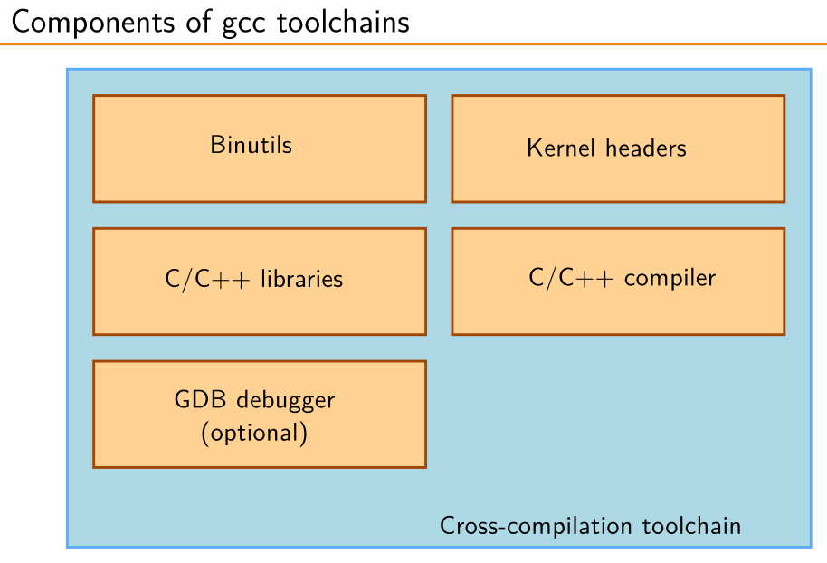

Cross Compiling
Bootlin's Embedded Linux Training
Cross compilation is one of the four main tools that any embedded Linux developer needs.


The Binutils is a set of tools to generate and manipulate binaries (usually with the ELF format) for a given CPU architecture. They include tools such as the assembler as, linker ld, objcopy, objdump, etc.
A toolchain is identified by a tuple like:
Getting the toolchain
There are three approaches to getting a cross-compilation toolchain:
-
Getting a pre-compiled toolchain, such as the Bootlin's toolchains or Linaro's toolchains. This is the simplest and most convenient solution, but you can't fine tune the toolchain to your needs.
-
Building the toolchain as a part of a build system, such as Buildroot or Yocto Project. This approach has its own section.
-
Using Crosstool-NG
Crosstool-NG
Crosstool-NG aims at building toolchains. Nothing more, nothing less. It is quite straightforward to install and use, provided that you know what you need from your toolchain.
I suggest reading the documentation, but here is a TL,DR:
Installation
VERSION="1.28.0"
wget "http://crosstool-ng.org/download/crosstool-ng/crosstool-ng-${VERSION}.tar.bz2"
tar -xf "crosstool-ng-${VERSION}.tar.bz2"
cd "crosstool-ng-${VERSION}"
sudo apt update && sudo apt install -y \
gcc g++ gperf bison flex texinfo help2man make libncurses-dev \
python3-dev autoconf automake libtool libtool-bin gawk wget bzip2 \
xz-utils unzip patch libstdc++6 rsync git meson ninja-build
./configure --enable-local
make
cat ./bash-completion/ct-ng >> "${HOME}/.bashrc"
First step configuration
Instead of starting from scratch, the best way to start is to check a similar toolchain, and adapt it to your needs:
./ct-ng show-<tuple>
./ct-ng show-arm-none-eabi
[L...] arm-none-eabi
Languages : C,C++
OS : bare-metal
Binutils : binutils-2.45
Compiler : gcc-15.2.0
Linkers :
C library : newlib-4.5.0.20241231 picolibc-1.8.10
Debug tools :
Companion libs : gmp-6.3.0 isl-0.27 mpc-1.3.1 mpfr-4.2.2 newlib-nano-4.5.0.20241231 newlib-nano-4.5.0.20241231 zlib-1.3.1 zstd-1.5.7
Companion tools :
./ct-ng show-mips-unknown-linux-gnu
[L...] mips-unknown-linux-gnu
Languages : C,C++
OS : linux-6.16
Binutils : binutils-2.45
Compiler : gcc-15.2.0
Linkers :
C library : glibc-2.42
Debug tools : duma-2_5_21 gdb-16.3 strace-6.16
Companion libs : expat-2.7.1 gettext-0.26 gmp-6.3.0 isl-0.27 libiconv-1.18 mpc-1.3.1 mpfr-4.2.2 ncurses-6.5 zlib-1.3.1 zstd-1.5.7
Companion tools :
Once a sample was decided as a base, run:
Then you can start making configurations in the usual GUI menu:
Second step configuration
Once the default toolchain was selected, is time to fine tune the actual toolchain in the menuconfig. I have done it a few times, there aren't a lot of options and aren't hard to understand, just go one by one.
The only hard one mugh be
After that, build the toolchain with:
' -marm -march=armv5te+fp -mfloat-abi=softfp' --> lib/arm/v5te/softfp (gcc) lib/arm/v5te/softfp (os) [EXTRA] ' -marm -march=armv5te+fp -mfloat-abi=hard' --> lib/arm/v5te/hard (gcc) lib/arm/v5te/hard (os) [EXTRA] ' -mthumb -mfloat-abi=soft' --> lib/thumb/nofp (gcc) lib/thumb/nofp (os) [EXTRA] ' -mthumb -march=armv7 -mfloat-abi=soft' --> lib/thumb/v7/nofp (gcc) lib/thumb/v7/nofp (os) [EXTRA] ' -mthumb -march=armv7+fp -mfloat-abi=softfp' --> lib/thumb/v7+fp/softfp (gcc) lib/thumb/v7+fp/softfp (os) [EXTRA] ' -mthumb -march=armv7+fp -mfloat-abi=hard' --> lib/thumb/v7+fp/hard (gcc) lib/thumb/v7+fp/hard (os) [EXTRA] ' -mthumb -march=armv7-r+fp.sp -mfloat-abi=softfp' --> lib/thumb/v7-r+fp.sp/softfp (gcc) lib/thumb/v7-r+fp.sp/softfp (os) [EXTRA] ' -mthumb -march=armv7-r+fp.sp -mfloat-abi=hard' --> lib/thumb/v7-r+fp.sp/hard (gcc) lib/thumb/v7-r+fp.sp/hard (os) [EXTRA] ' -mthumb -march=armv7-a -mfloat-abi=soft' --> lib/thumb/v7-a/nofp (gcc) lib/thumb/v7-a/nofp (os) [EXTRA] ' -mthumb -march=armv7-a+fp -mfloat-abi=softfp' --> lib/thumb/v7-a+fp/softfp (gcc) lib/thumb/v7-a+fp/softfp (os) [EXTRA] ' -mthumb -march=armv7-a+fp -mfloat-abi=hard' --> lib/thumb/v7-a+fp/hard (gcc) lib/thumb/v7-a+fp/hard (os) [EXTRA] ' -mthumb -march=armv7-a+simd -mfloat-abi=softfp' --> lib/thumb/v7-a+simd/softfp (gcc) lib/thumb/v7-a+simd/softfp (os) [EXTRA] ' -mthumb -march=armv7-a+simd -mfloat-abi=hard' --> lib/thumb/v7-a+simd/hard (gcc) lib/thumb/v7-a+simd/hard (os) [EXTRA] ' -mthumb -march=armv7ve+simd -mfloat-abi=softfp' --> lib/thumb/v7ve+simd/softfp (gcc) lib/thumb/v7ve+simd/softfp (os) [EXTRA] ' -mthumb -march=armv7ve+simd -mfloat-abi=hard' --> lib/thumb/v7ve+simd/hard (gcc) lib/thumb/v7ve+simd/hard (os) [EXTRA] ' -mthumb -march=armv8-a -mfloat-abi=soft' --> lib/thumb/v8-a/nofp (gcc) lib/thumb/v8-a/nofp (os) [EXTRA] ' -mthumb -march=armv8-a+simd -mfloat-abi=softfp' --> lib/thumb/v8-a+simd/softfp (gcc) lib/thumb/v8-a+simd/softfp (os) [EXTRA] ' -mthumb -march=armv8-a+simd -mfloat-abi=hard' --> lib/thumb/v8-a+simd/hard (gcc) lib/thumb/v8-a+simd/hard (os) [EXTRA] ' -mthumb -march=armv6s-m -mfloat-abi=soft' --> lib/thumb/v6-m/nofp (gcc) lib/thumb/v6-m/nofp (os) [EXTRA] ' -mthumb -march=armv7-m -mfloat-abi=soft' --> lib/thumb/v7-m/nofp (gcc) lib/thumb/v7-m/nofp (os) [EXTRA] ' -mthumb -march=armv7e-m -mfloat-abi=soft' --> lib/thumb/v7e-m/nofp (gcc) lib/thumb/v7e-m/nofp (os) [EXTRA] ' -mthumb -march=armv7e-m+fp -mfloat-abi=softfp' --> lib/thumb/v7e-m+fp/softfp (gcc) lib/thumb/v7e-m+fp/softfp (os) [EXTRA] ' -mthumb -march=armv7e-m+fp -mfloat-abi=hard' --> lib/thumb/v7e-m+fp/hard (gcc) lib/thumb/v7e-m+fp/hard (os) [EXTRA] ' -mthumb -march=armv7e-m+fp.dp -mfloat-abi=softfp' --> lib/thumb/v7e-m+dp/softfp (gcc) lib/thumb/v7e-m+dp/softfp (os) [EXTRA] ' -mthumb -march=armv7e-m+fp.dp -mfloat-abi=hard' --> lib/thumb/v7e-m+dp/hard (gcc) lib/thumb/v7e-m+dp/hard (os) [EXTRA] ' -mthumb -march=armv8-m.base -mfloat-abi=soft' --> lib/thumb/v8-m.base/nofp (gcc) lib/thumb/v8-m.base/nofp (os) [EXTRA] ' -mthumb -march=armv8-m.main -mfloat-abi=soft' --> lib/thumb/v8-m.main/nofp (gcc) lib/thumb/v8-m.main/nofp (os) [EXTRA] ' -mthumb -march=armv8-m.main+fp -mfloat-abi=softfp' --> lib/thumb/v8-m.main+fp/softfp (gcc) lib/thumb/v8-m.main+fp/softfp (os) [EXTRA] ' -mthumb -march=armv8-m.main+fp -mfloat-abi=hard' --> lib/thumb/v8-m.main+fp/hard (gcc) lib/thumb/v8-m.main+fp/hard (os) [EXTRA] ' -mthumb -march=armv8-m.main+fp.dp -mfloat-abi=softfp' --> lib/thumb/v8-m.main+dp/softfp (gcc) lib/thumb/v8-m.main+dp/softfp (os) [EXTRA] ' -mthumb -march=armv8-m.main+fp.dp -mfloat-abi=hard' --> lib/thumb/v8-m.main+dp/hard (gcc) lib/thumb/v8-m.main+dp/hard (os)
Newlib: embedded C libray
Newlib is a a more compact version of the C library specially designed for embedded systems.
You can use a great subset of the C library functions, provided that you implement the System Calls (syscalls). In the documentation there is a list of all the syscalls and the required syscalls for each function.
You don't need to provide a full implementation if, for example, you don't support filesystems, but at least a mock implementation must be provided to link to the library.
Check the initialization script "crt0.S", and the linker flag that supress it. It could be a great example of bootloader.
Explain why linking directly with "ld" is a bad idea.
Linking everything together... arm-cotti-eabi-gcc: fatal error: environment variable 'GCC_EXEC_PREFIX' not defined
Move the toolchain to anywhere else from its default location
Some examples
Realview pb a8
realview-pb-a8 ARM RealView Platform Baseboard for Cortex-A8
[RealView Platform Baseboard for Cortex-A8][https://developer.arm.com/documentation/dui0417/d]
When looking at the memory map of the device, we find that the address 0x7000_0000-0x7FFF_FFFF is an SDRAM, that is also a mirror of the 0x0000_0000-0xFFFF_FFFF, so writing to any of these two is equivalent.
Because we are dealing with a Cortex-A8, the architecture expects to see a vector table at address 0x0000_0000 like this:
For the cortex A8 of the realview in baremetal, the closest choice is:
TODO
El problema acá es que no quiero escribir una aplicación baremetal en assembler, quiero probar mi toolchain con algo en C. Necesito un bootloader sencillito.
[realview_user_manual]